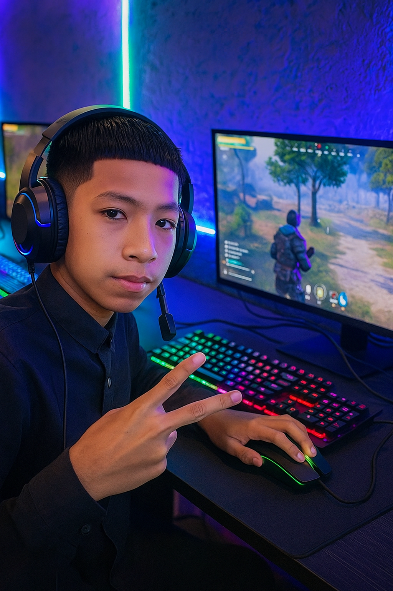

guasarabeandres5@gmail.com
+57 321 8289141
Estudio virtual · Hogar en Totumal

Soy un joven de 15 años, nacido en el Resguardo Totumal (Caldas). Actualmente curso grado 11 en la Institución Educativa El Águila. Me defino por la disciplina, el amor por la tecnología y el deseo de construir un futuro a través del desarrollo de software. Creo firmemente que la educación virtual desde el territorio es una oportunidad para transformar realidades.
"Quiero seguir con el SENA" — mi próximo paso es ingresar al programa de Análisis y Desarrollo de Software (ADSO) en modalidad 100% virtual desde mi hogar en el Resguardo Totumal. Anhelo especializarme en desarrollo full stack y utilizar la tecnología para impactar mi comunidad.
Desde mi propia habitación en el Resguardo Totumal, utilizo recursos gratuitos, documentación y plataformas interactivas para aprender desarrollo web. Mi primera página web sobre mi proyecto de vida es el reflejo de mi pasión. Próximamente dominaré:
La tecnología no tiene fronteras, mi formación virtual es la llave para construir un futuro brillante.
Vivir en el Resguardo Totumal, municipio de Caldas, me ha enseñado resiliencia y gratitud. Mi familia y mi comunidad me apoyan para alcanzar mis sueños. Quiero demostrar que un joven rural puede convertirse en un profesional en tecnología sin necesidad de migrar, aprovechando la educación virtual de calidad del SENA y mi autodisciplina.
Una vez culmine mi grado 11, aplicaré al SENA para estudiar Desarrollo de Software en casa. Complementaré mi aprendizaje con proyectos reales en HTML, CSS y JavaScript, construyendo un portafolio sólido. Mi meta final: ser desarrollador profesional y contribuir al desarrollo tecnológico de Caldas.